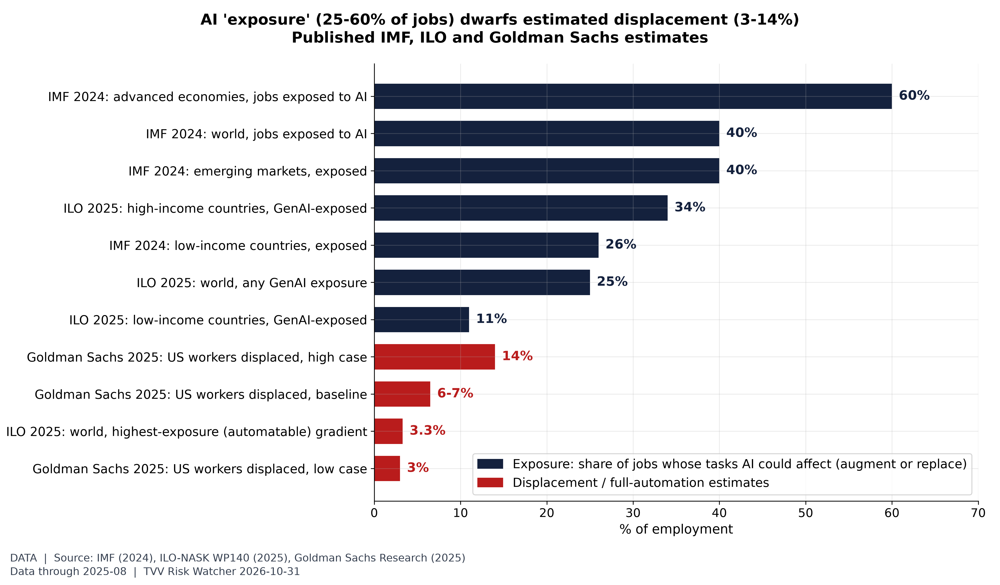
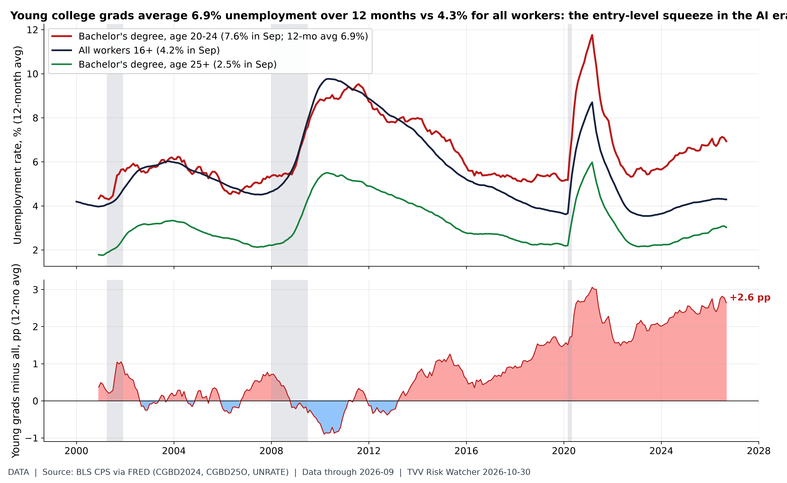
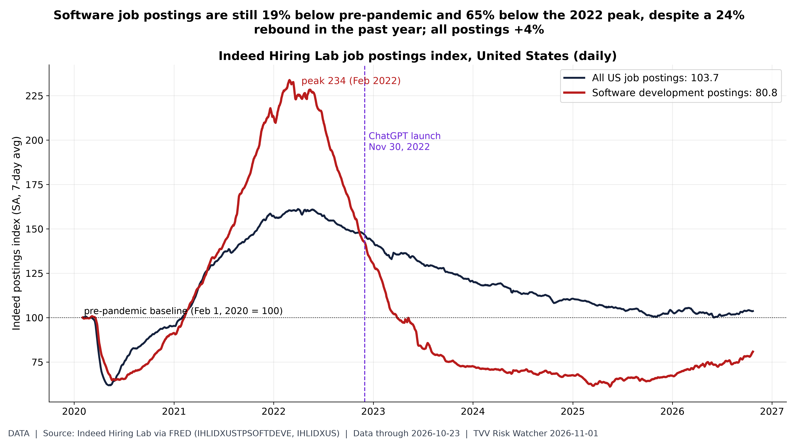
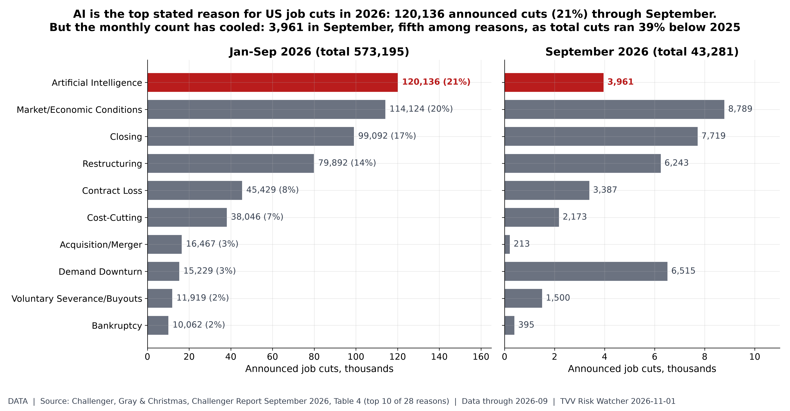
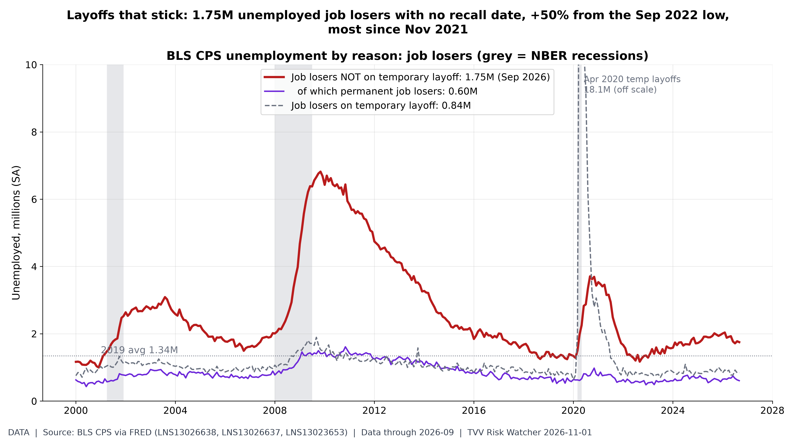
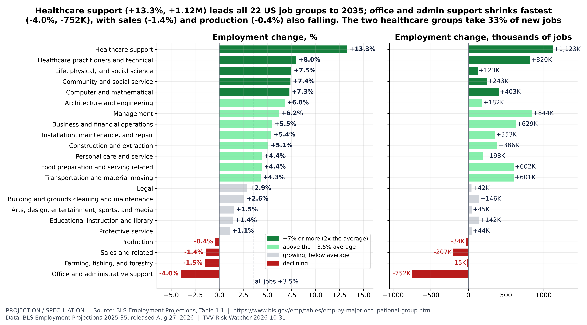
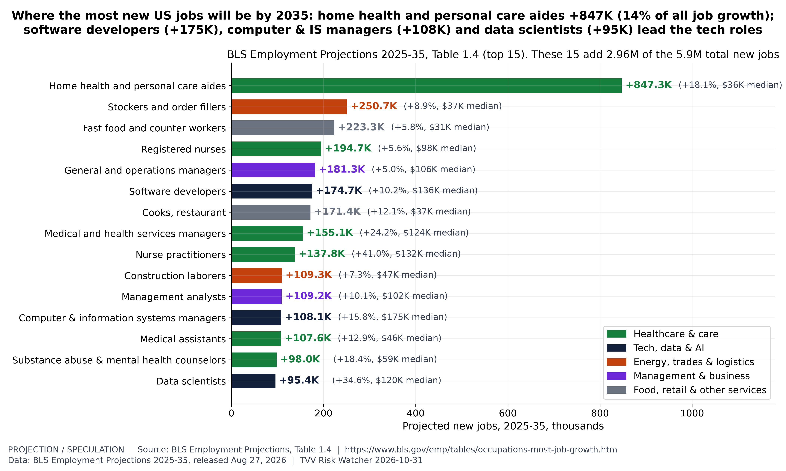
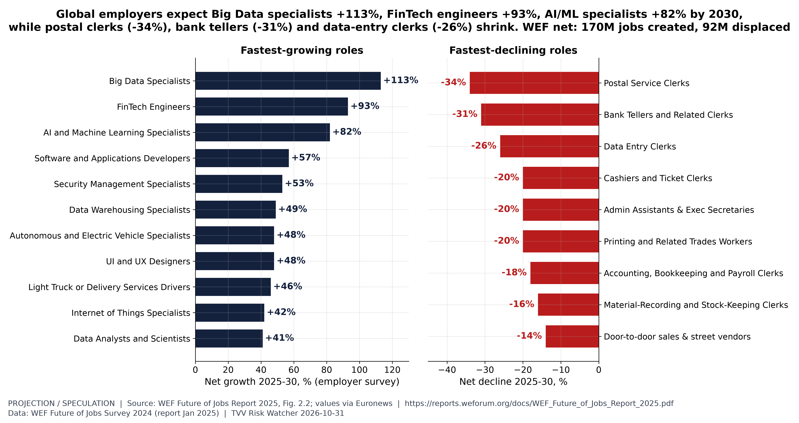
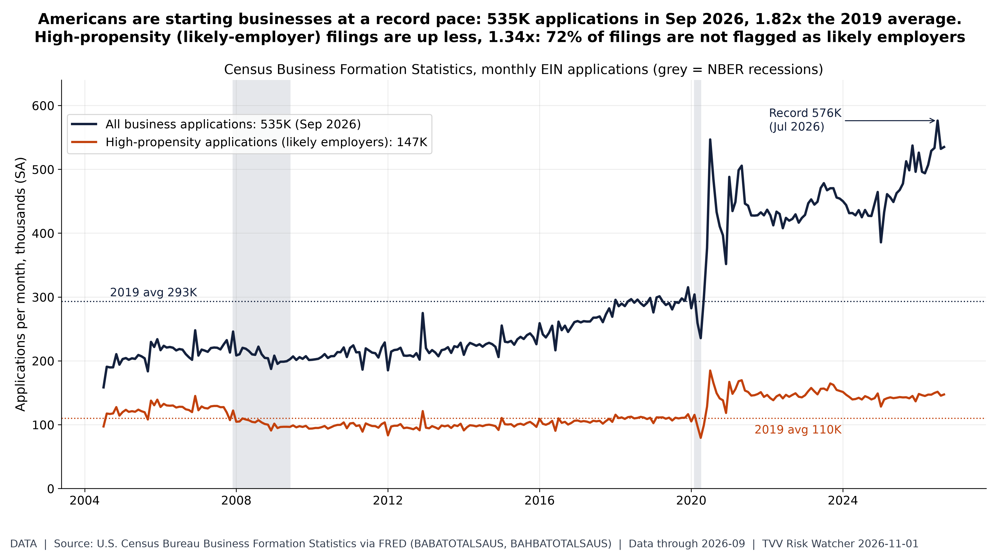

TVV FOCUS ESSAY: AI JOB DISPLACEMENT
Risks, counter-strategies and re-direction toward the fastest-growing jobs
TechVestVentures Research | November 1, 2026 | Jobs/Labor series | Charts: TVV AI Job Displacement Graphs
Key Points
- Exposure is large, measured displacement is still small. The IMF puts about 40% of global employment in AI-exposed jobs, but Goldman Sachs estimates 6–7% of US workers would be displaced if AI is widely adopted, mostly temporarily. Exposure includes jobs AI helps rather than replaces.
- The early pressure is narrow and visible: young graduates (7.6% unemployment vs 4.2% for all workers), software postings (down 65% from the 2022 peak) and employer statements (AI cited in 120,136 announced cuts, 21% of the 2026 total).
- The broad layoff wave has not arrived. Continuing jobless claims are within 1% of their 2019 average and job openings still outnumber layoffs 4.3 to 1. The labor market is low-hire, low-fire rather than collapsing.
- The jobs being created are mostly hands-on. BLS projects healthcare support to grow 13.3% to 2035 while office and administrative support shrinks 4.0% (−752K), the biggest decline of any group, with BLS citing automation tools including AI.
- Opportunity, with caveats. Business applications hit a record 576K in July 2026. Building a venture with AI tools is a realistic path for some displaced workers, which is the premise of TVV's Augmentive Ventures project, but applications are not surviving firms.
1. The Size of the Risk: Exposure Is Not Job Loss
The headline numbers on AI and jobs measure different things, and most public alarm comes from treating them as one. The IMF estimates that about 40% of global employment is exposed to AI, rising to about 60% in advanced economies. The ILO and Poland's NASK find a narrower 25% of global employment in occupations with some generative-AI exposure, and only 3.3% in the highest-exposure band. Goldman Sachs (August 2025) estimates that 6–7% of the US workforce would be displaced if AI is widely adopted, within a range of 3–14%, and expects most of that displacement to be transitory.
Exposure means AI can perform or assist with a meaningful share of a job's tasks. For many workers it means a productivity tool rather than a pink slip. Anthropic's own usage data cut both ways: in its January 2026 Economic Index, 52% of Claude.ai conversations were classed as augmentation (a person working with the model) against 45% automation (the model doing the task), a reversal from August 2025, when automation led 49% to 47%. Anthropic adds that over a longer time frame automation's share is still slowly rising.

Figure 1. AI exposure vs displacement. Published estimates, not forecasts by TVV. IMF (Jan 2024 SDN/2024/001): ~40% of global employment exposed to AI, ~60% in advanced economies, 40% emerging markets, 26% low-income. ILO-NASK (May 2025, WP140): 25% of global employment in an occupation with some GenAI exposure, 34% in high-income vs 11% in low-income countries, 3.3% in the highest-exposure gradient. Goldman Sachs (Aug 2025): 6-7% of the US workforce displaced if AI is widely adopted (range 3-14%), mostly transitory. Exposure includes augmentation, so it is not a job-loss count. [Data. Data: 2025-08 (latest of the cited studies)] Source: https://www.imf.org/en/Blogs/Articles/2024/01/14/ai-will-transform-the-global-economy-lets-make-sure-it-benefits-humanity
The fair reading is that AI's reach across tasks is wide and its proven job destruction is so far narrow. The risk for the next few years is less a sudden collapse than a slow squeeze on specific roles and on the entry-level rungs of white-collar careers.
2. Where the Pressure Shows First
If AI substitutes for labor anywhere first, it should be in routine knowledge work and in the junior roles where people learn it. The data are consistent with that, but they do not prove AI is the cause. In September 2026, bachelor's-degree holders aged 20–24 had 7.6% unemployment, against 4.2% for all workers and 2.5% for graduates aged 25 and over. On 12-month averages the young-graduate gap is 2.6 percentage points, above its pre-2020 high of 1.7 points.

Figure 2. Entry-level squeeze. BLS (CPS via FRED, not seasonally adjusted for the degree series): bachelor's-degree holders aged 20-24 had 7.6% unemployment in September 2026 vs 4.2% for all workers and 2.5% for bachelor's holders 25+. On 12-month averages (removing the school-year seasonality) the young-grad gap is +2.6 pp (pre-2020 high +1.7 pp). Entry-level white-collar hiring is where AI substitution is expected to show first, but this series does not isolate AI as a cause. [Data. Data: 2026-09 (monthly CPS; Sep jobs report)] Source: https://fred.stlouisfed.org/series/CGBD2024
Software is the most-watched case. Indeed's index of software-development postings stood at 80.8 on October 23 (February 2020 = 100), 65% below its February 2022 peak, while all postings were at 103.7. The past year shows a partial rebound of 23.8%. Tech employment tells the same story: computer systems design employs 2.36M, 5.2% below its March 2023 peak, and data processing and hosting jobs are down 4.7% from a year earlier despite the data-center building boom. Rate hikes and post-pandemic over-hiring overlap with the arrival of AI coding tools, so the decline cannot be pinned on AI alone.

Figure 3. Software jobs still far below 2020. Indeed Hiring Lab (FRED IHLIDXUSTPSOFTDEVE, IHLIDXUS), Oct 23: software development postings index 80.8 (Feb 1, 2020 = 100; +23.8% y/y), down 65% from 233.8 on Feb 28, 2022; all postings 103.7 (+3.1% y/y). The gap is consistent with AI coding tools plus post-2022 tech cutbacks, though the past year shows a partial rebound; postings measure hiring demand, not layoffs. [Data. Data: 2026-10-23 (Indeed via FRED, daily)] Source: https://fred.stlouisfed.org/series/IHLIDXUSTPSOFTDEVE
3. What Layoffs Say, and What They Don't
Employers now name AI more than any other reason for announced job cuts. In Challenger, Gray & Christmas's September report, AI was cited for 120,136 announced US cuts from January through September 2026, about 21% of the total and the leading reason year to date. Technology companies announced 165,925 cuts, 29% of all cuts and 54% more than a year earlier. But the monthly AI count has cooled: 3,961 in September, fifth among reasons. Total announced cuts were 39% below the first nine months of 2025.

Figure 4. AI as a stated reason for job cuts. Challenger, Gray & Christmas (Table 4): employers cited artificial intelligence in 120,136 announced US job cuts Jan-Sep 2026, about 21% of 573,195 and the leading reason year to date; in September AI was fifth with 3,961 cuts (about 9% of 43,281). Total announced cuts were down 39% from 946,426 in Jan-Sep 2025. These are announced plans and the reasons employers state, not verified AI-caused job losses. [Data. Data: 2026-09 (Challenger Report released Oct 1, 2026)] Source: https://www.challengergray.com/wp-content/uploads/2026/10/Challenger-Report-September-2026.pdf
These are announced plans and the reasons companies choose to give, and critics note that naming AI can sound better to investors than naming weak demand. The official data on lasting job loss are a better test. Unemployed job losers who are not on temporary layoff, meaning those with no recall date, reached 1.75M in September 2026. That is 50% above the September 2022 low and the highest since November 2021 outside the COVID spike. This is the type of job loss that restructuring, including AI-linked cuts, produces. It is rising, but it remains far below the 2009–10 peak.

Figure 5. Permanent-type job losses rising. BLS CPS (FRED LNS13026638) unemployed job losers not on temporary layoff 1.750M in Sep 2026, up 50% from 1.170M in Sep 2022; 2019 average 1.34M; highest since Nov 2021 outside the COVID spike. Permanent job losers 0.605M (LNS13026637); on temporary layoff (expecting recall) 0.845M (LNS13023653). No-recall job loss is the layoff type tied to restructuring, including AI-linked cuts; temporary layoffs expect recall. [Data. Data: 2026-09 (BLS Employment Situation)] Source: https://fred.stlouisfed.org/series/LNS13026638
4. The Counter-Case: AI as a Net Job Creator
The opposing view deserves equal weight. The WEF Future of Jobs Report 2025 surveyed more than 1,000 employers covering over 14M workers. They expect 170M jobs to be created and 92M displaced worldwide by 2030, a net gain of 78M, with technology among the drivers of both. Optimists add that earlier waves of automation eliminated specific jobs while total employment kept growing.
The US labor data so far fit the optimistic case better than the alarm. Continuing jobless claims were 1.701M in the week to October 17, 13% below a year earlier and within 1% of their 2019 average. Initial claims of 194K are below the 2019 average of 218K. JOLTS showed 7.08M openings against 1.64M layoffs in August, 4.3 openings per layoff, above the 2019 average of 3.9.
What the data do show is a market that is hard to enter or re-enter. Long-term unemployment (27 weeks or more) is 27.3% of all unemployed, against 21.1% in 2019, and the quits rate is 1.9%. Temporary-help jobs, which employers usually cut first, are 21.3% below their March 2022 peak. Few people are being fired, but few are being hired, and that falls hardest on graduates and on anyone whose role disappears.
5. Re-Direction: Where Jobs Will Grow
The BLS 2025–35 projections released on August 27, 2026, project total US employment to grow 3.5%, or 5.9M jobs. The growth is lopsided. Healthcare support (+13.3%, +1.12M) and healthcare practitioners (+8.0%, +820K) together take 32.8% of all new jobs. Office and administrative support (−4.0%, −752K) and sales (−1.4%, −207K) shrink, and BLS cites automation tools, including AI, for both declines.

Figure 6. Job growth by occupational group. BLS Table 1.1, 2025-35: healthcare support +13.3% (+1,122.7K), healthcare practitioners and technical +8.0% (+819.5K), life, physical and social science +7.5%, community and social service +7.4%, computer and mathematical +7.3% (+403.1K), architecture and engineering +6.8%. Declines: office and administrative support -4.0% (-752.1K, the most of any group), sales -1.4% (-206.8K), farming -1.5%, production -0.4%. BLS cites automation tools, including AI, for the office/admin and sales declines. The two healthcare groups add 32.8% of all new jobs. Projections, not forecasts by TVV. [Projection. Data: BLS Employment Projections 2025-35, released Aug 27, 2026] Source: https://www.bls.gov/emp/tables/emp-by-major-occupational-group.htm
By growth rate, the leaders are nurse practitioners (+41.0%), solar photovoltaic installers (+36.5%) and data scientists (+34.6%), and 10 of the top 15 are healthcare or care roles. Growth rates in small occupations add few jobs, though: solar and wind technicians together add fewer than 15K.
By number of jobs, home health and personal care aides lead by far with +847K, 14.3% of all US job growth, at a median wage of $35,800. Software developers (+175K), computer and information systems managers (+108K) and data scientists (+95K) are the largest tech gainers. Many of the biggest gains are in lower-wage, hands-on care and service work, which matters for anyone planning a move from a displaced office job.

Figure 7. Most new jobs to 2035. BLS Table 1.4: home health and personal care aides add 847.3K jobs 2025-35 (+18.1%, median wage $35,800), 14.3% of the 5.9M total. Next: stockers and order fillers +250.7K, fast food and counter workers +223.3K, registered nurses +194.7K, general and operations managers +181.3K, software developers +174.7K (+10.2%). The top 15 add 2,963.9K jobs (50% of the total). Many of the biggest gains are in lower-wage, hands-on care and service work. Projections, not forecasts by TVV. [Projection. Data: BLS Employment Projections 2025-35, released Aug 27, 2026] Source: https://www.bls.gov/emp/tables/occupations-most-job-growth.htm
Global employers see a similar split. In the WEF survey, the fastest-growing roles are Big Data Specialists (+113%), FinTech Engineers (+93%) and AI and Machine Learning Specialists (+82%). The fastest-declining are Postal Service Clerks (−34%), Bank Tellers (−31%) and Data Entry Clerks (−26%). WEF expects 39% of workers' existing skills to be transformed or become outdated by 2030.

Figure 8. WEF growing vs declining roles. WEF Future of Jobs Report 2025, Figure 2.2 (survey of 1,000+ employers, 14M+ workers, 55 economies): net growth 2025-30 in roles at surveyed employers. Growing: Big Data Specialists +113%, FinTech Engineers +93%, AI and ML Specialists +82%, Software and Applications Developers +57%, Security Management +53%. Declining: Postal Service Clerks -34%, Bank Tellers -31%, Data Entry Clerks -26%, Cashiers, Admin Assistants and Printing workers -20% each. WEF estimates 170M jobs created and 92M displaced globally by 2030 (net +78M). WEF prints the bars without values; the values are as published by Euronews (Feb 1, 2025) and match the bar lengths. Four further growing roles and six declining roles shown by WEF have no published values and are omitted. Employer survey expectations, not forecasts by TVV. [Projection. Data: WEF Future of Jobs Survey 2024 (report Jan 2025)] Source: https://reports.weforum.org/docs/WEF_Future_of_Jobs_Report_2025.pdf
6. Counter-Strategies
The data point to a handful of practical responses. The measures below are TVV's reading of the evidence above, not findings of the cited sources.
- Workers in exposed roles: move toward the tasks AI augments rather than replaces, and learn the tools early. WEF finds that if the world's workforce were 100 people, 59 would need training by 2030, and 11 of them are unlikely to get it. That group is at most risk.
- Career changers: follow the projected growth. Healthcare and care work, skilled trades tied to the energy and data-center build-out, and data, security and AI roles all grow faster than the 3.5% average. The trade-off is that the largest-volume growth often pays less than the office work it replaces.
- Graduates: entry-level white-collar hiring is the weakest link. Internships, apprenticeships and roles that combine domain knowledge with AI skills are the most direct way in.
- Employers: WEF reports that 77% of surveyed employers plan to reskill or upskill staff to work alongside AI and 47% plan to move staff from AI-disrupted roles to other positions, while 41% expect to downsize. Moving staff into new roles keeps their knowledge of the company, which is lost when they are laid off.
- Policymakers: employers in the WEF survey name funding for reskilling and upskilling as the most welcome public policies. Monitoring should rely on hard data such as claims, job losers and graduate unemployment rather than on announced cuts.
7. The Opportunity Theme: Building Ventures with AI
One re-direction path runs through the labor market rather than around it: starting a business. Americans are already doing so at a record pace. Census Business Formation Statistics show 534,947 business applications in September 2026, 1.82 times the 2019 monthly average, after a record 576,264 in July. High-propensity applications, those likely to become employers, rose less, to 1.34 times their 2019 average. Most new filings are not flagged as likely employers.

Figure 9. Business start-ups at a record pace. Census Business Formation Statistics (FRED BABATOTALSAUS): 534,947 business applications in Sep 2026, 1.82x the 2019 monthly average of 293,134; record 576,264 in Jul 2026. High-propensity applications (BAHBATOTALSAUS, filings likely to become employers) 147,331, 1.34x their 2019 average. Applications are intentions, not surviving firms, and the series does not identify AI or job loss as the cause. [Data. Data: 2026-09 (Census BFS via FRED, monthly)] Source: https://fred.stlouisfed.org/series/BABATOTALSAUS
This is the space TechVestVentures' Augmentive Ventures project addresses: helping people displaced by AI build ventures with AI bots, so the same tools that squeeze their old roles become the staff of a new business. AI tools can now draft, research, code, design and handle customer contact, which lowers the cost of starting a small company. The project treats this as an opportunity for some displaced workers rather than a cure for displacement.
The caveats are real. Business applications are intentions, not surviving firms. The Census series does not show whether job loss or AI is behind the filings, and most filings are not expected to hire. A venture built on AI tools faces competitors with the same tools, so domain knowledge, customer relationships and trust remain the edge. Displaced workers often know their old industry well, and that knowledge is the asset Augmentive Ventures aims to build on.
8. What to Watch Next
- Challenger's monthly reports: whether AI-cited cuts rise again after cooling to 3,961 in September.
- Unemployed job losers not on temporary layoff (1.75M in September): a sustained climb would be the clearest sign of structural job loss.
- Graduate unemployment against all workers (7.6% vs 4.2%) and Indeed software postings (80.8): the entry-level test.
- Continuing jobless claims (1.701M): a break well above the 2019 average would mark a broad layoff wave, which has not yet happened.
- Business applications (534,947 in September): whether the surge holds and whether more filings become employers.
Sources
- IMF: https://www.imf.org/en/Blogs/Articles/2024/01/14/ai-will-transform-the-global-economy-lets-make-sure-it-benefits-humanity
- Goldman Sachs: https://www.goldmansachs.com/insights/articles/how-will-ai-affect-the-global-workforce
- WEF: https://reports.weforum.org/docs/WEF_Future_of_Jobs_Report_2025.pdf
- Anthropic Economic Index, January 2026 report: https://www.anthropic.com/research/anthropic-economic-index-january-2026-report
- Challenger: https://www.challengergray.com/wp-content/uploads/2026/10/Challenger-Report-September-2026.pdf
- BLS Employment Projections: https://www.bls.gov/news.release/ecopro.nr0.htm
- BLS computer systems design: https://fred.stlouisfed.org/series/CES6054150001
- BLS data processing and hosting: https://fred.stlouisfed.org/series/CES5051800001
- BLS JOLTS layoffs: https://fred.stlouisfed.org/series/JTSLDL
- BLS long-term unemployed: https://fred.stlouisfed.org/series/UEMP27OV
- BLS JOLTS quits rate: https://fred.stlouisfed.org/series/JTSQUR
- BLS temporary help services: https://fred.stlouisfed.org/series/TEMPHELPS
- TVV AI Job Displacement Graphs: https://atlantean2.github.io/tvv-ai-job-displacement-graphs/
- DOL continuing jobless claims: https://fred.stlouisfed.org/series/CCSA
- BLS fastest-growing occupations: https://www.bls.gov/emp/tables/fastest-growing-occupations.htm
- Census Business Formation Statistics: https://www.census.gov/econ/bfs/index.html
- AI exposure vs displacement: https://www.ilo.org/resource/news/one-four-jobs-risk-being-transformed-genai-new-ilo%E2%80%93nask-global-index-shows
- AI exposure vs displacement: https://www.ilo.org/sites/default/files/2025-05/WP140_web.pdf
- Entry-level squeeze: https://fred.stlouisfed.org/series/CGBD2024
- Entry-level squeeze: https://fred.stlouisfed.org/series/CGBD25O
- Entry-level squeeze: https://fred.stlouisfed.org/series/UNRATE
- Entry-level squeeze: https://www.bls.gov/cps/
- Software jobs still far below 2020: https://fred.stlouisfed.org/series/IHLIDXUSTPSOFTDEVE
- Software jobs still far below 2020: https://fred.stlouisfed.org/series/IHLIDXUS
- Software jobs still far below 2020: https://data.indeed.com/
- AI as a stated reason for job cuts: https://www.challengergray.com/blog/category/job-cuts-report/
- Permanent-type job losses rising: https://fred.stlouisfed.org/series/LNS13026638
- Permanent-type job losses rising: https://fred.stlouisfed.org/series/LNS13026637
- Permanent-type job losses rising: https://fred.stlouisfed.org/series/LNS13023653
- Job growth by occupational group: https://www.bls.gov/emp/tables/emp-by-major-occupational-group.htm
- Most new jobs to 2035: https://www.bls.gov/emp/tables/occupations-most-job-growth.htm
- WEF growing vs declining roles: https://www.weforum.org/publications/the-future-of-jobs-report-2025/in-full/2-jobs-outlook/
- WEF growing vs declining roles: https://www.euronews.com/business/2025/02/01/jobs-market-at-a-crossroads-which-are-the-fastest-growing-and-declining-jobs
- Business start-ups at a record pace: https://fred.stlouisfed.org/series/BABATOTALSAUS
- Business start-ups at a record pace: https://fred.stlouisfed.org/series/BAHBATOTALSAUS